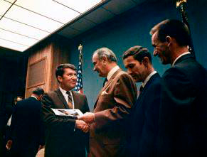
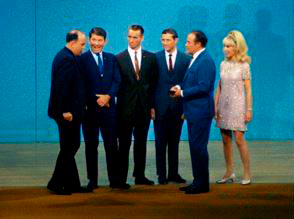
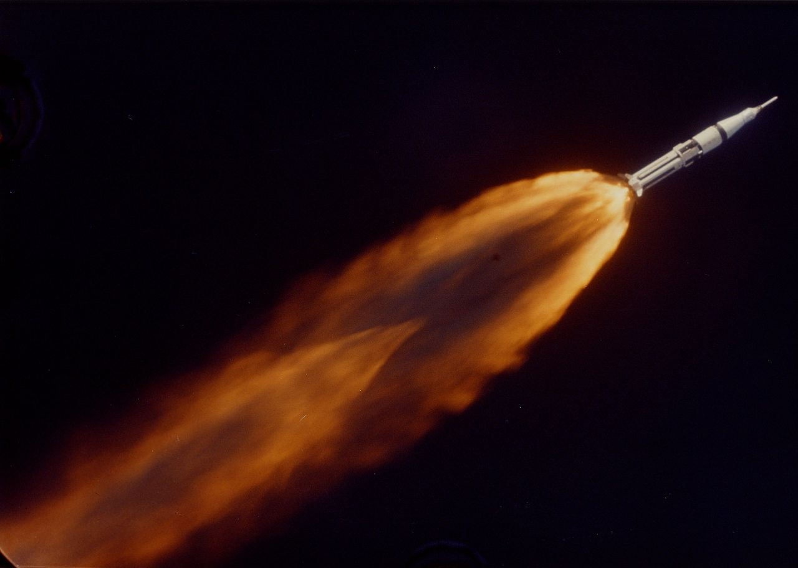
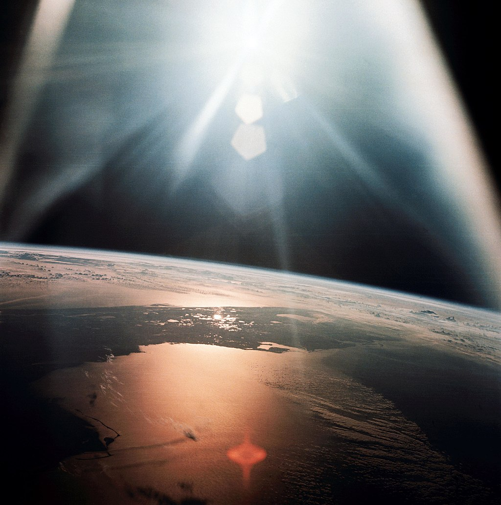
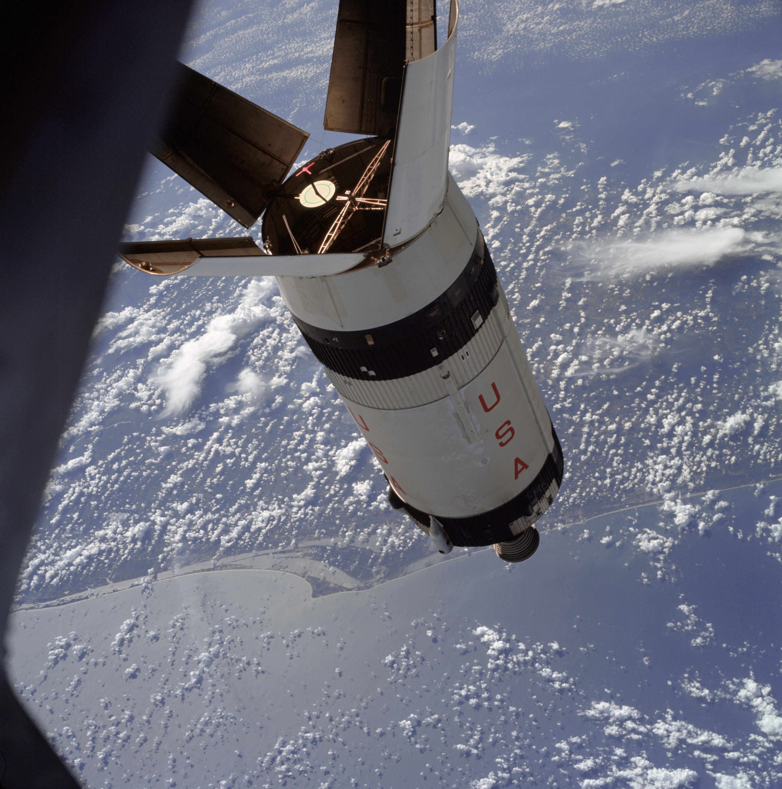
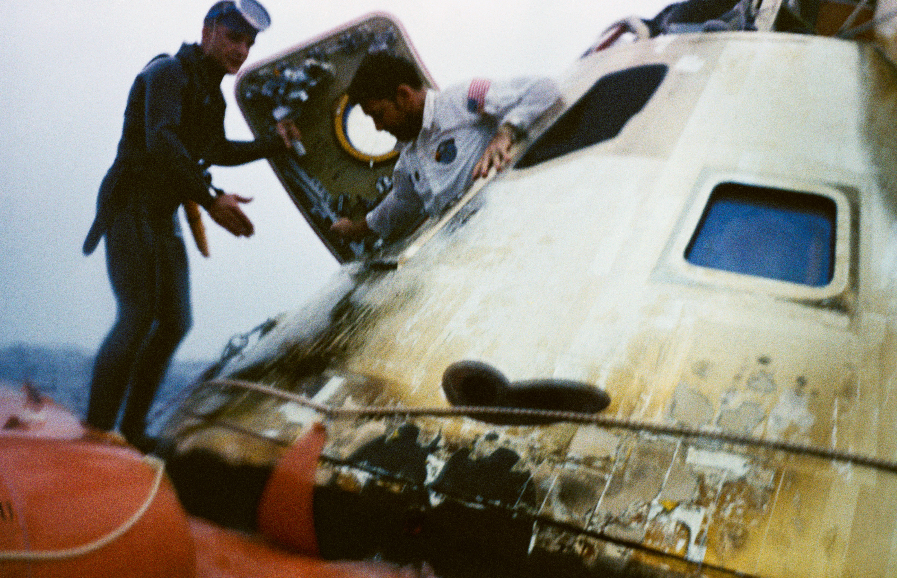
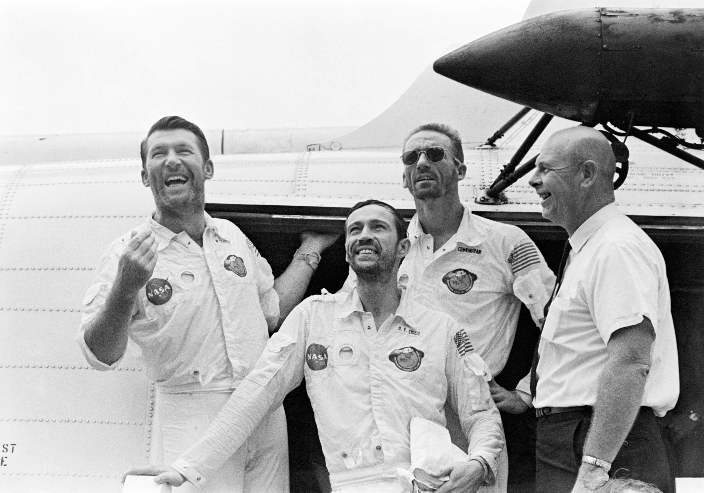
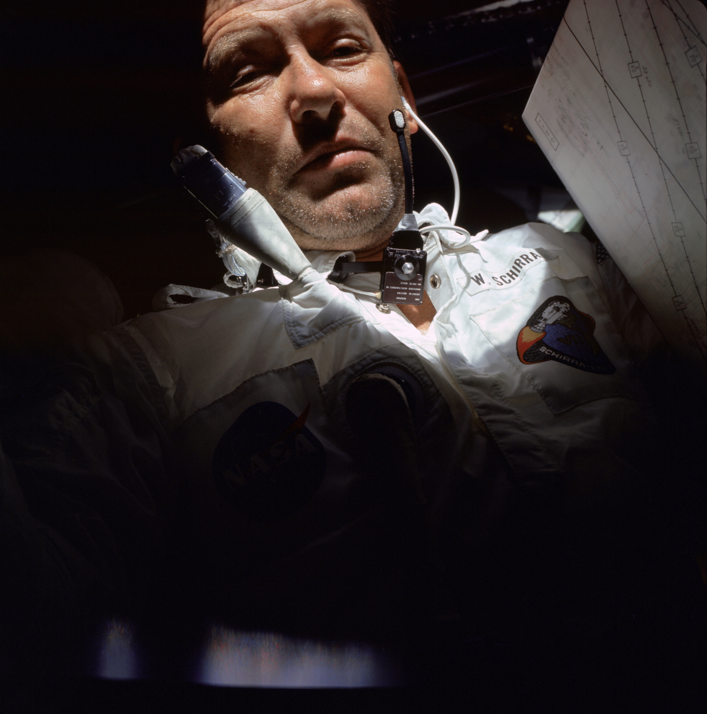
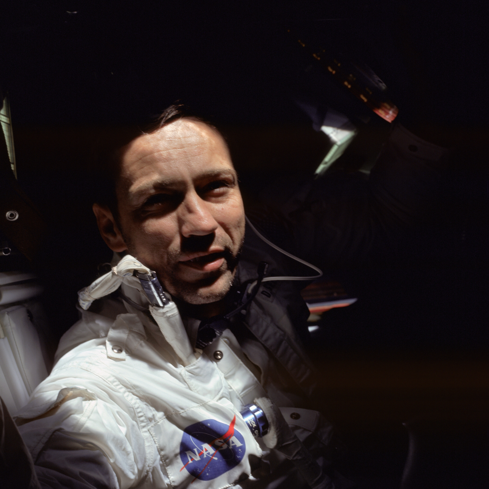
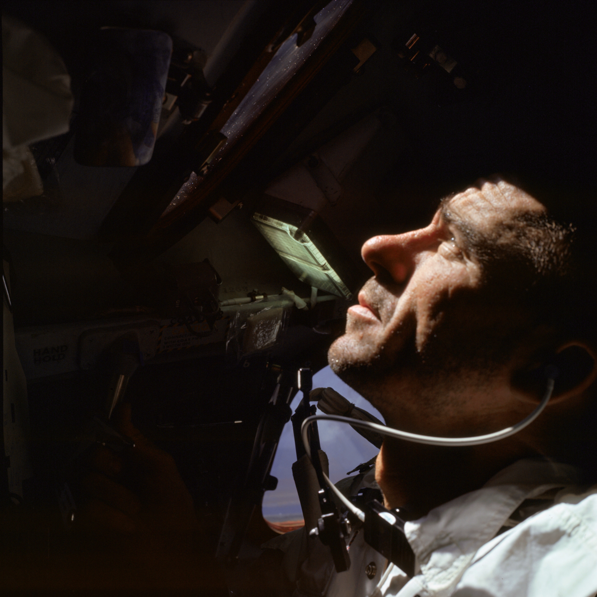

Esquerda: O ex-administrador da NASA James Webb falando no evento Apollo 7 no LBJ Ranch. Sentado na
extrema esquerda
estão o administrador interino da NASA Thomas Paine e o presidente Lyndon Johnson, e sentados à
direita estão a Apollo 7
astronautas Walter Cunningham, Donn Eisele e Walter Schirra. Direita: Após a cerimônia formal, o
presidente Johnson
(segundo da esquerda) conversando com os astronautas da Apollo 7 Schirra, Eisele e Cunningham.

Esquerda: Uma cena da gravação do The Bob Hope Show no MSC: (da esquerda para a direita) Diretor de
Relações Públicas Paul Haney,
Os astronautas da Apollo 7 Walter Schirra, Walter Cunningham e Donn Eisele, Bob Hope e Barbara Eden.
Direita: Apollo 7
astronautas Schirra, Cunningham e Eisele em outra cena do The Bob Hope Show.
As tripulações da Apollo 7 e Apollo 8 assinando um documento
memorial a ser pendurado no
Sala do Tratado da Casa Branca. Os signatários são (sentados, da esquerda para a direita):
astronautas
Walter Cunningham, Donn Eisele, Walter Schirra, Williams Anders, James Lovell e
Frank Borman. De pé estão Charles Lindbergh, primeira-dama Sra. Johnson, presidente
Lyndon Johnson, ex-administrador da NASA James Webb e vice-presidente
Hubert Humphrey.


Esquerda: Apollo 7 a 35.000 pés (10.668 metros). (NASA)
Direita: A Flórida vista da Apollo 7



Esquerda: TREINAMENTO APOLLO 7 RENDEZVOUS Durante a missão Apollo
7, os astronautas se aproximaram do estágio superior de seu foguete Saturn IB para simular a
extração do módulo lunar durante missões posteriores. Imagem: NASA
Centro:
APOLLO 7 CAPSULE EGRESS Wally Schrirra sai do módulo de comando da Apollo 7 após spalshdown em 22 de
outubro de 1968.Image: NASA
Direito: A TRIPULAÇÃO DO APOLLO 7 DEPOIS DE VOLTAR PARA CASA A tripulação da Apollo 7 chegando a
bordo do USS Essex, o principal navio de recuperação da missão. Da esquerda para a direita, Walter
Schirra, comandante; Donn Eisele, piloto do módulo de comando; Walter Cunningham, piloto do módulo
lunar; e Dr. Donald E. Stullken, Líder da Equipe de Recuperação da NASA da Divisão de Aterrissagem e
Recuperação do Centro de Naves Espaciais Tripuladas (MSC). Imagem: NASA
Torne-se um membro



Esquerda: WALLY SCHIRRA DURING APOLLO 7 Image: NASA
Centro: DONN EISELE DURING APOLLO 7 Image: NASA
Direito: WALTER CUNNINGHAM DURING APOLLO 7 Image: NASA